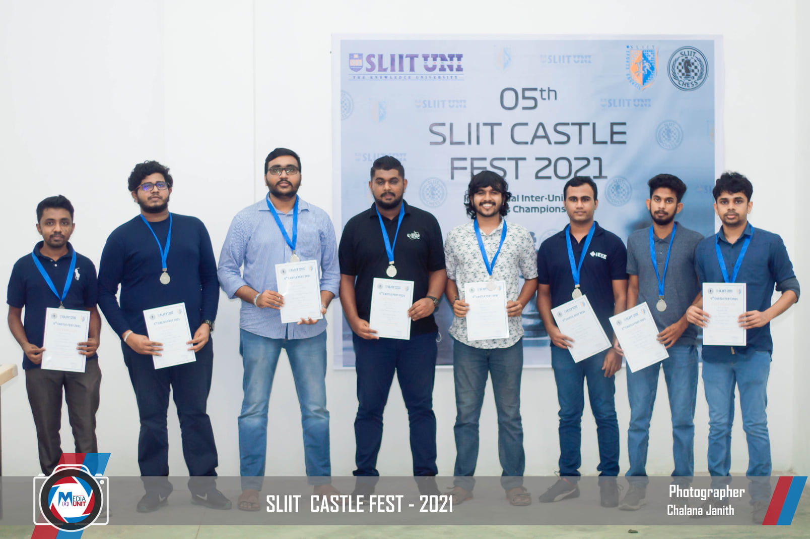
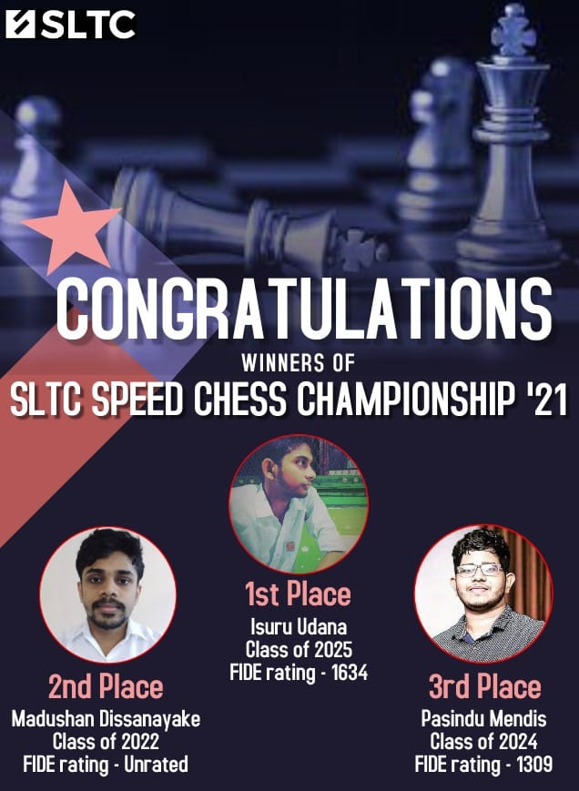
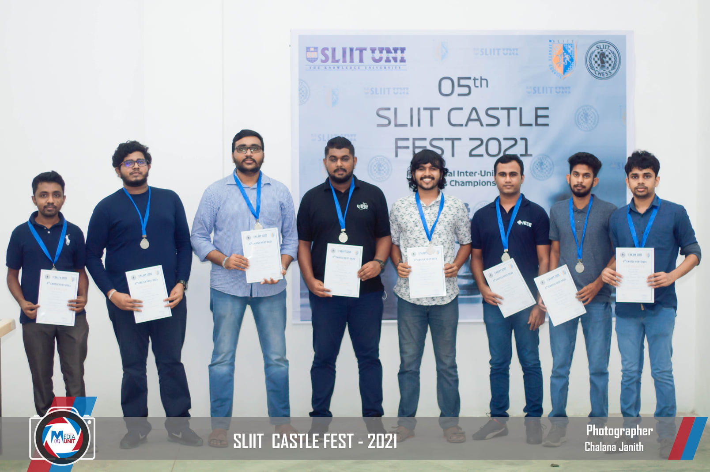
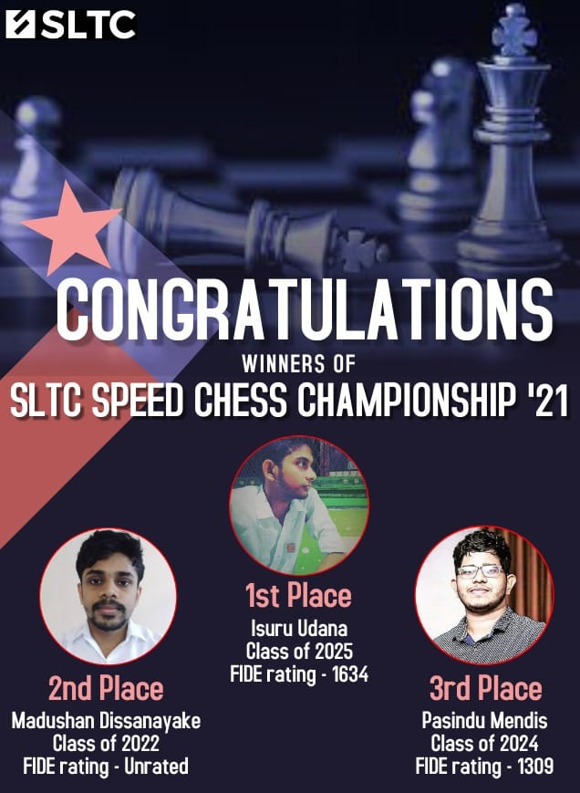
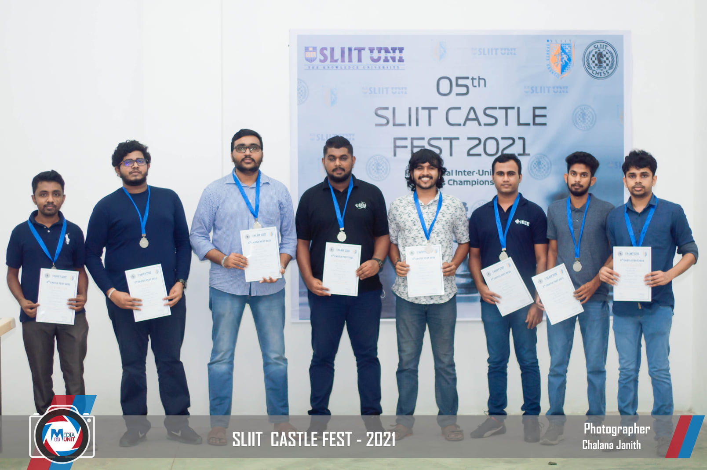
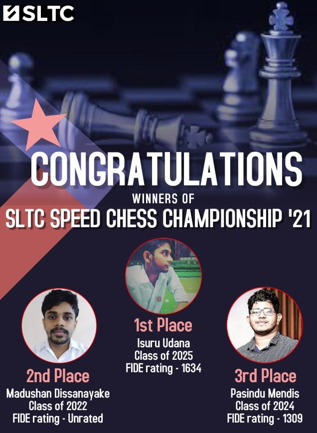
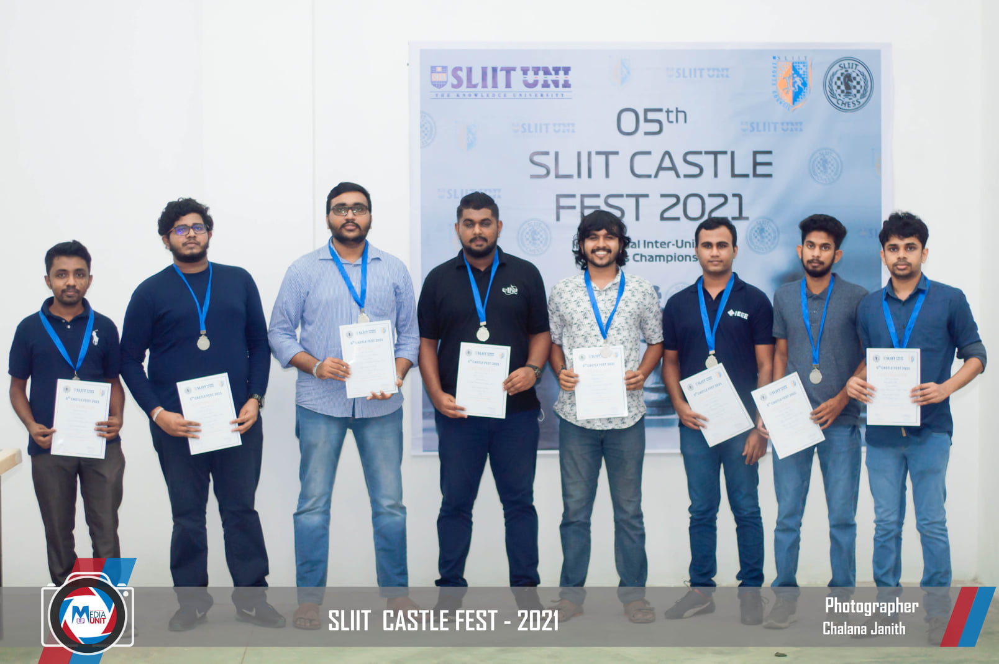
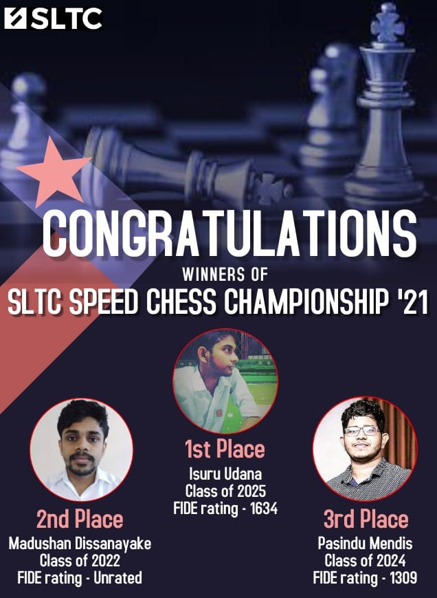
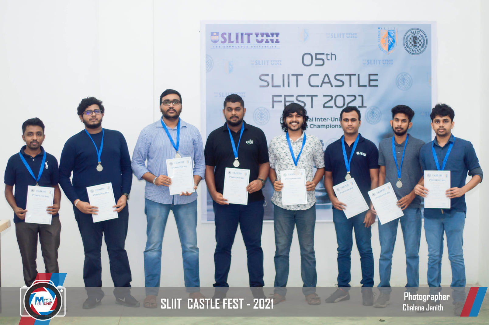
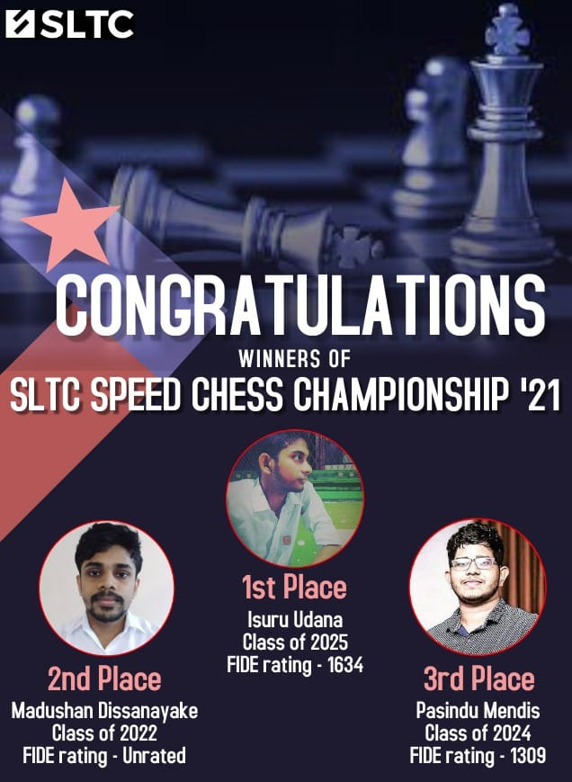

Home
Education
Projects
Skills
Experience
Extra Curricular Activities
Extra Curricular Activities
 
Chess
Founding member of SLTC Chess club at SLTC Research University.
Captain of SLTC chess team 2019 - 2022.
The cheif organizer of SLTC Speed chess championship online tournment.
Also became the 1st runner up at above tournment .
Leading SLTC chess team to become the 1st runner up team at SLIIT castle fest inter-university chess championship 2022
 






